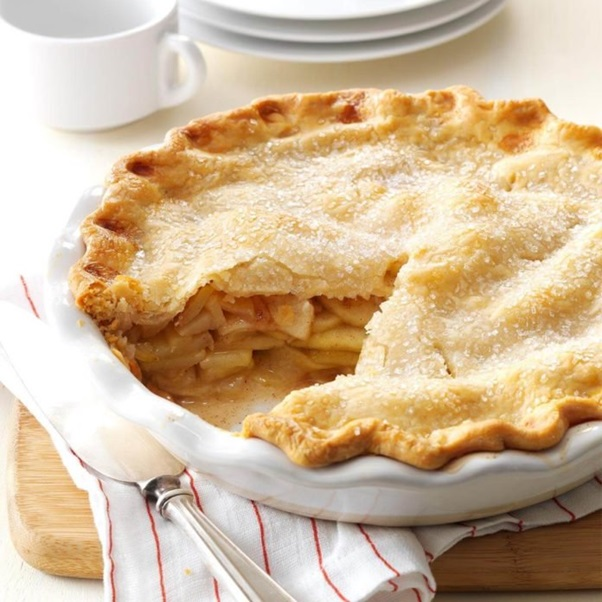

Apple Pie

An apple pie is a pie or a tart, in which the principal filling ingredient is apple. It is, on occasion, served with whipped cream or ice cream on top.
Ingredients
- 1/2 cup sugar
- 1/2 cup packed brown sugar
- 3 tablespoons all-purpose flour
- 1 teaspoon ground cinnamon
- 1/4 teaspoon ground ginger
- 1/4 teaspoon ground nutmeg
- 6 to 7 cups thinly sliced peeled tart apples
- 1 tablespoon lemon juice
- Pastry for double-crust pie (9 inches)
- 1 tablespoon butter
- 1 large egg white
- Additional sugar
Directions
- In a small bowl, combine the sugars, flour and spices; set aside. In a large bowl, toss apples with lemon juice. Add sugar mixture; toss to coat.
- Line a 9-in. pie plate with bottom crust; trim even with edge. Fill with apple mixture; dot with butter. Roll remaining crust to fit top of pie; place over filling. Trim, seal and flute edges. Cut slits in crust.
- Beat egg white until foamy; brush over crust. Sprinkle with sugar. Cover edges loosely with foil.
- Bake at 375° for 25 minutes. Remove foil and bake until crust is golden brown and filling is bubbly, 20-25 minutes longer. Cool on a wire rack.
See other Recipes